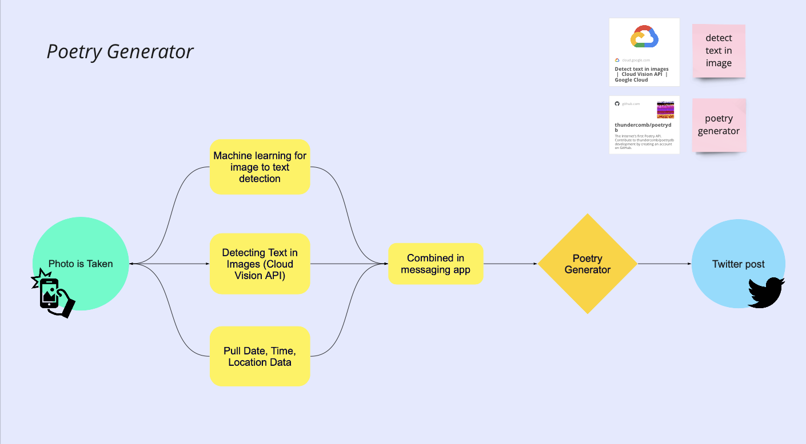
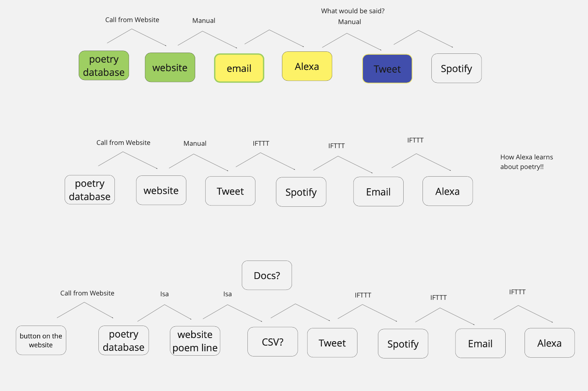
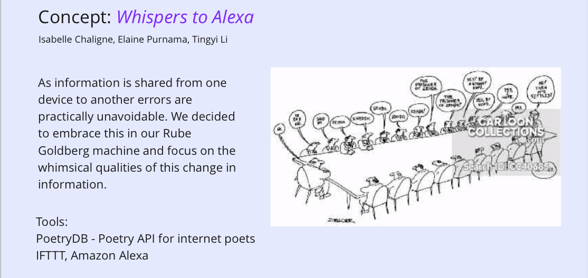
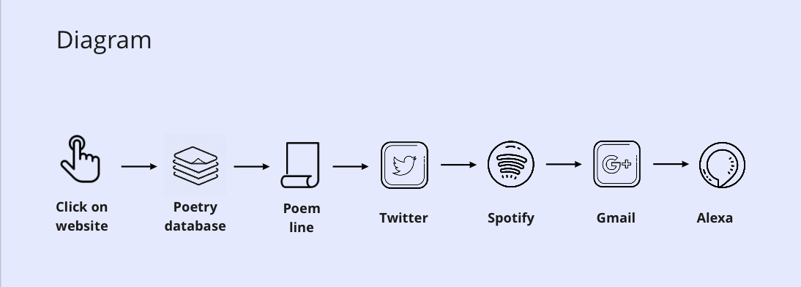

Spring Term 2021
Week 1 Reading
Quotes - "Programming Design Systems" by Rune Madsen
"Although shapes are not words, and therefore have no objective semantic meaning, we have a natural understanding of how to translate the characteristics of shapes into meaning"
I like this chapter on the perception of shapes and the great examples of what they convey. I like how Madsen goes back to basics when explain how we encounter these shapes in our daily life.
"When designers learn to not only think systematically about the design process, but also to implement those systems in software, they can build things that were not possible before."
I think this is a great proposal and a tool that we should be taking advantage of. As someone who uses repetitive patterns in my designs I think this chapter on multiplying shapes would be super helpful. On the other hand I also disagree with completely subscribing to the systemic method and teaching the machine, I feel like it takes away a certain freedom and human touch that can be required in certain projects. Somehow I feel excited but also restrained by the methods that are proposed.
Week 2 Reading
Quotes - "You look like a thing and I love you" by Janelle Shane
"AIs would be surprised to find that their tricks only work in their simulations, not in the real world."
I find it interesting that the author uses language that makes the AI sound very human. I also learnt alot from the examples backing up this argument that helped me picture the differences between the simulation and the real world.
"“One strategy is to reward the AI more for finding the rare thing than for finding the common thing."
This quote surprised me because I didnt realise an AI could be influenced by a reward system. This again makes it sounds like the AI could be a living being. I wonder what rewards would be for AI...
"People treat these kinds of algorithms as if they are making recommendations, but it’s a lot more accurate to say that they’re making predictions. They’re not telling us what the best decision would be—they’re just learning to predict human behavior."
This is a great way to look at things. I find it super interesting to think of the AI as a sort of refferee; a tool that calls out our biases with no scrupples or beautifying. It can offer great opportunity a for human collaboration from diverse backgrounds to attempt to cancel out biases.
Whispers to Alexa, Creating a Rube Goldberg Machine (W1-3)
Concept and diagrams
At first our project group (Elaine, Tingyi and myself) wanted to base our Rube Goldberg Machince on the analysis of an image using word and image recognition to create a poetic post on Twitter. We quickly realised the complexity of this task but through this first diagram, we alsodiscovered our mutual interest in using poetry. The first diagram involved machine learning to extract information from the image (among other things) which was both complex and time consuming for our project. We therefore decided to focuss our search on poetry APIs and how we could transfers poetry lines to other devices. (see first diagram below)
We found the following API and along the way started creating and testing different applets on IFTTT. This was first met with both failure and confusion but as we redeveloped our concept and got exterior advice (from Maxim and Ben) we revisited our diagram and tried to find new functioning conections. We were particularly excited to use Alexa as our final reciever after Tingyi experemented with getting her to read emails.
Evolving diagrams
I worked specifically on the website that would pull a line from the poetry API. Elaine would then copy and paste it into Twitter to create a post.
Poetry DB API The Website fetching poetry linesFinal
 Reflection
Overall, I really enjoyed learning about pulling information using APIs. The website I created was extremelly rudimentary but I really enjoyed gaining more experience with CSS and learning how to create functional buttons. I think that the spotify element of our project was also a very unusual part; it would be interesting to explore its capabilities further and consider combining a lyrics genius API.
Week 3 Reading
Quotes - "Notes on Failure" AI Ethics Case Studies by Joyce Carol Oates
"Sometimes, this means systems that were designed to produce positive social ends get coopted to negative purposes, such as facial recognition software being used by authoritarian regimes to identify and persecute political dissidents"
The two things that worried me the most with this case study on dynamic sound indentification was privacy and the increase in errors that could take place when scaling the company. As the quote says, products are often created for positive use and are tested for such scenarios and it feels like detrimental missuse is not really tested. This also brings up questions on censorship and privacy. The study doesn't discuss mechanisms that allow people to take certain information down for example. Also, the lack of largescale testing might bring up new errors. I do find myself thinking that I would take similar descisions to the Epimetheus overal.
"Upon receipt of the student data, Hephaestats began with a broad policy of data analysis looking at a large number of predictors, ranging from various student demographics (e.g. race, ethnicity, gender, mobility, address, home life) to academic factors (e.g. grades, GPA, test results, history of disciplinary action, attendance) to teacher statistics (e.g. certifications, degrees, percent of students failing per class, years of teaching)."
I totally discagree with certain data categorys used in this research. They were using race, gender and location which should've been kept out. This also shows a biased approach from teacher to student and the cases should be brought up on a case by case scenario. Also not asking permission to harvest past student's data is a huge breach of privacy.
Week 4 Reading
Quotes - Chapter 2 "A Brief Visit to the Systems Zoo" from Thinking in Systems by Donella H. Meadows
"Systems with similar feedback structures produce similar dynamic behaviors, even if the outward appearance of these systems is completely dissimilar."
I think this quote put things in perspective for me. Systems thinking allows for a different viewpoint and showed similarities I didn't expect. I never would've associated the use of a thermostat furnace in a home and population growth otherwise.I think that it's a great strategy for problem solving because if gives you a wider perspective on the forces at play. Climate change for example could impact both of the models discussed here.
"Why is that important? Because it means there will always be delays in responding. It says that a flow canpt react instantly to a flow. It can react ony to a change in a stock, and only after a slight delay to register the incoming information."
The idea of designing for delays is exciting, especially on the web. I found it really interesting that not all models take the delay into account in their models; in a way they are true nor false but they don't simulate the real world.
Qhat is driving the driving factors? What is adjusting the inflows and outflows? this is a question about system boundaries. It requires a hard look at those driving factors to see if they are actuoally independent or if they are also embedded in the system
Maybe everything could be part of the system when you think of our human world, I have trouble seeing things being trully independent from each other. I think there is an interesting exercise of prioritisation here, it shows the authors perspective.Making something independent feels like saying: it is connected but not relevant enough for this sceneario.
Week 5 Reading
Quotes - "Petri Dish" by Elizabeth FS Roberts (web article
"This use of “culture” harkens back to the cultivation of agriculture and animal husbandry of the 16th century, which was extended to the process of human development and eventually linked by philosophers, like Johann Gottfried Herder, to people marinating in particular conditions of place, language, spirit and tradition."
I find this quote useful in understanding the etymology of the world culture and the contexts it comes from.
"The black box of the petri dish is opening…. but to what? Maybe to an expanded sense of contaminates, where contamination prevention is impossible, since entanglement is existence. "
I think this is an important mental shift. Take the COVID pandemic, some people innitially believed the virus wouldn't reach their country (therefore them) due to priveledge or geographical location. Entanglement can be another world for human error (of judgement) when we force ourselves in a categorical mindset.
Chapter 3, Design as the Machines Come to Life from "Synthetic Aesthtics" by Alexandra Daisy Ginsberg
"Humans became consumers to give purpose to the machines' function, and the mass of stuff marked "progress" in our own lives"
It's an interesting angle to take, we currently use our economic system to determine value but also purpose. I think this quote really shows the impact of capitalism and how it works as an ideology.
"Synthetic biology will shrink the gap between what we make and what we are, merging our neat categories of nature and artifice."
I think categories can be very useful when putting forward a point of view, however synthetic biology is definitely one of those fields that shows how everything is connected. It is a useful example in making us realise the impact of categorisation especially since we are still uncomfortable with what may result from creating "synthetic beings".
"The trouble is that although vast sums of money are spent in science and tech in developing the research, only trivial amounts are spent on trying to predict the results of the work on society: as soon as something becomes available it is applied, without any study of what it might do to mankind. (James F. Danielli)"
I think this gives a lot of purpose to current approaches to design and thinking about the more long term consequences of makin/creating/designing.
Rate My Setup(Week 4-6)
Concept
The aim of the project was to produce a "digital altar" to be used in Zoom or OBS as a playful way to generate a rich/oppulant digital portrait. We learnt how to use tools such as SnapCamera, OBS, Unity as well as photogrametry to create our setup. The theme I picked for my setup was the myself as a mad scientist.
Process
Reflection
Week 6 Reading
Quotes - “Ruined by Design” by Mike Monteiro
"Everyone remembers Frankenstein’s monster, but they call it by his maker’s name. The worst of what we create will outlive us.”
“The people affected by our actions are always more important than our intent.”
“You were not hired to get approval or to be graded or to have your work pinned to the company fridge. Too often, designers present their work as if the goal is to get someone to like it, as if our job is to make someone happy.”
I think these quotes set the role of the designer nicely. They helped me question who do designers really work for. The last quote really struck home for me. However another way to think about it is that we want our designs to create a positive impression for any person using our outcome (obviously once we reach a close to final version). I can see how in some ways it can cast a shadow on the purpose of the project/product but I also think it shows the intentions to create a good product. Maybe conversations with clients/entities can have an ethical framework built around it, at the end of the day, you are talking to another human not a corporation. Thats why its important to consider these layers of fiction.
“Even then, there is nothing harder to change than company culture.”
I'd be really interested in looking into this further; it's something Qi and I touched on in Studio 3's "Future of Work" Brief.
“If you care about working ethically, it is imperative that you understand how your company makes money, because your labor is going to be used to help them do it. The second question we ask all of our clients after “why are you making this?” is “how does this make money?”
This is valuable advice, I especially since most countries function under a capitalist system. Definitely is the underbelly of all these entities and helps us understand how a company purpose might be molded by this need.
“Nothing you make is every truly done. In fact, the story of your work starts when it passes from your hands and into the world.”
I wonder how advertising companies deal with this. How long term can a campaign be followed/prolongued ethically? Obsolecense is pervasive in the 21st Century.
Fall Term 2020
Week1
Creative tech tools
3Doodler Create+ Essentials 3D Printing Pen Set https://the3doodler.com/collections/create/products/create-essentials
3D Body Scaner https://www.styku.com
Poem generator https://www.poem-generator.org.uk/
Project examples
Yuri Suzuki https://yurisuzuki.com/artist/looks-like-music/
Georgia Lupi http://giorgialupi.com/whatcounts
Daft Punk //www.rollingstone.com/music/music-news/watch-daft-punks-legendary-2006-coachella-set-in-documentary-clip-225749/
Quotes + Analysis
“Arduino makes such work part of the development process, and the “push-back” of the physical electronics - the resistance of reality to our attempts to contain — it is therefore more present.” By using a physical object such as Arduino as opposed to software, this quote establishes that participants will create stronger bonds to the project. The participants are now doubly involved; through the analytical realm but also the physical realm. We generally tend to attach a higher sense of responsibility to physical things as we can visualise what we are responsible for.
“The ultimate goal of critical making experiences is not the evocative or pedagogical object intended to be experienced by others, but rather the creation of novel understandings by makers themselves” This shows that “critical making” does not assume a didactic position, it is instead a space for exploration that will lead to different forms of knowledge. Making is used as the process, the tool that allows this knowledge to emerge.
“Open design helps bring about a kind of socio-technical literacy that is necessary to reconnect materiality and morality” I like how this quote summarises the purpose of Open Design and how it attempts to address the disconnect we sometimes have with what we create and its implications. As we move to increasingly digital products it is easy to miss the links and distance ourselves from our creations as they become less tangible and we find ourselves needing to analyse novel scenarios we hadn’t previously encountered with physical products.
Week 2
Interactive Installations
The Clock by Christian Marclay https://www.youtube.com/watch?v=qKHmj83VC78
Audio Tooth Implant by Auger & Loizeau http://www.auger-loizeau.com/projects/toothimplant
Nike Rise interactive basketball court by AKQA https://www.akqa.com/work/nike/rise/
Quotes - "The Hacker Hacked" by Brett Scott
"By whistling the correct tone into a telephone handset, he could place free long-distance calls through a chink in the AT&T armour."
I like the poetics of this quote and how it eases you into the history of hacking. It illustrates the playfulness and curiosity that are at the heart of this activity. This metaphor also shows the idea of battling and challenging pre-existing systems.
"Hackers believe that essential lessons can be learned about systems -- about the world -- from taking things apart, seeing how they work, and using this knowledge to create new and even more interesting things."
I find interesting how designers have maybe appropriated this methodology. Thinking in terms of systems is an important skill when working on projects that deal with wicked problems in particular. This quote resonates with me and relates to my project called REWARE (how to be more in touch with your electronics). I followed this approach of deconstruction of electronic objects to better understand their circuits and systems, the hardware circuit and beyond.
"A hack stripped of anti-conventional intent is not a hack at all. It's just a piece of business innovation."
I find this to be insightful, as we are encouraged to gentrify provocative radical ideas, the center for growth (the never ending aim of capitalism) will be tied back to the field of business. This quote makes me consider how both may be valuable but have different aims. Is business inovation too strongly limited by its constraints?
Week 3
Quotes - "What do Prototypes Prototype?" by Houde and Hill
"Is a brick a prototype? That depends on how it is used."
I really like this examples because it shows our biases when it comes to the legitimacy we give to protoypes. I also like how the text shows the value of testing the weight and scale through the brick. The brick has few visual connotations to detract us from the two factors explored. I think if the object was already designed the appearance might make us consider scale and weight as minor.
"An interesting side-effect of this prototype was that its directness made it a powerful prop for promoting the project within the organization"
This quote points out to the importance of knowing one's audience as well as showing the influence of a high fidelity prototype. As most audiences are most responsive to the "look and feel" category/visual material, it is a great tool to leverage when promoting an idea.
" Implementation prototypes [...] commonly find their way directly into the final system. Two problems arise from this dynamic: firstly, programs developed mainly to demonstrate feasibility may turn out in the long term to be difficult to maintain and develop, and secondly, their temporary use interfaces may never be properly redesigned before the final system is released."
This is something I personally struggle with in my practice as I don't spontaneously create multiple prototypes, ofter I am stuborn with my ideas. I think overall, this article proposes a structure and categorisation of prototypes that I will assimilate in my practice; I think it will encourage me to explore more aspects of my ideas by segmenting different aspects.
Project 1 - Creative Kluging


Week 4
Quotes - "The Presence Project" by Dunne, Gaver, Hooker et al.
RECONNOITRING THE PECCIOLI RADIOSCAPE "This success actually helped dissuade us from pursuing the system further: convinced that it would work, we saw little intellectual challenge in attacking purely political obstacles to its development"
I like that when finishing this project, the intended outcome was not reached but it was still considered successfull. I think that continuously asking the question "who are we designing for?"" influenced this descision and it is certainly an important point to remember. Sometimes what we consider process originaly can serve as outcome, goals can be realised prematurely. I also think that the political obstacles bring up a lot of interesting inquiries but in this scenario, it could hurt the peaceful and candid aim of the project by creating antagonising sides.
DIGITAL BOUDOIR " Finally it dawned on us that when a public phone rings, the one thing certain is that it’s not for you."
Participation is not always easy to encourage, especially when we want it to come from a genuine, curious place. When doing workshops or experiments with a public who isn't familiar with the project I've gotten used to expecting very little. Things that are strange or uncomfortable are mostly avoided, we are tought to avoid these interactions as we grow up. As a designer I think we can also feel this as well and need to design to create spaces that seem safe to awaken people's curiosity.
INTERVENING IN THE BIJLMER " We began to realise that the best slogans were slightly ambiguous or detached in tone (‘I am from another country’), or were particular and personal statements (‘I like a few drinks once in a while’). These seemed to escape classification into known forms of public display, invoking curiosity and imagination rather than immediate dismissal."
I think this responds well to the issues discuss in the second quote. I am also a fan of the ambiguous and how it stimulates the imagination. I like this approach as it encreases the chances of collecting various perspectives on the work. A prompt can feel less intimidating and more interactive than a statement.
Week 5
Examples of Simulation
Alexander McQueen - Kate Moss hologram
Fragmentin - Artificial Arcadia -
https://fragment.in/artworks/artificial-arcadia/
Yayoi Kusama - "Infinity room"
Project 2 - Worldbuilding/ Simulation (W4-6)
Create a world in Unity that represents the following word: blowing
Aim: create a mountainous trash island with a tornado blowing objects on the island and into the void.
Trash pattern for the island

Reflection and result
Innitially, I wanted the tornado to move on its own but I didn't manage to do that. Manually moving the tornado actually gave an interesting result and an interesting dynamic to the world. I enjoyed playing with purple and green lighting to create a dramatic tech-trash feel as well as creating the pattern for the mountains. If given more time, I would've liked to spawn more objects into the world and made the blowing effect more visible using different came angles. I also w would've liked to find ways to make the effect more dramatic
Week 8
Quotes - "What is Code?" by Paul Ford
"The dreamscape becomes fluid and can be sorted and restructured. I’ve had programming dreams where I move text around the screen."
I think this is an interesting theme to explore. Code can mimic the magical and thus it creates a fiction. I find interesting how these simulations enter our reality and realms like dreams that reflect our thoughts; they are seamingly affected by our digital transition
"The turn-of-last-century British artist William Morris once said you can’t have art without resistance in the materials. The computer and its multifarious peripherals are the materials. The code is the art."
This quote shares a unusual view of the computer. It is taking the backseat this time and being bended at wish by code. Defining code as art surprised me, I see it as the medium since it stimulates a response/creates something in turn which for me would be the art. Maybe since code is discussed in terms of language, we can view code as poetry and therefore art.
"Little in computing has a single, reliable name, which means everyone is always arguing over semantics."
This gave me some insight on the still blossoming and bendable structure of coding terminology.
Quotes - Vehicles Experiments in Synthetic Psychology by Valentino Braitenberg
"Imagine, now, what you would think if you saw such a vehicle swimming around a pond. It is restless, you would say, and does not like warm water, But it is quite stupid, since it is not able to turn back to the nice cold spot it overshot in its restlessness. Anyway, you would say, it is ALIVE, since you have never seen a particle of dead matter move around quite like that"
I super interesting how humans constantly link motion to behavior. Sudenly the robot speaks our language (reactions mimiced by humans). What are the impacts of classifying the vehicle as alive? Why are living things often cosidered more important than innanimate objects?
"There is something very crude about a vehicle that can only be excitedby the things it smells (or sees or feels or hears) and knows no soothing or relaxing stimuli"
This is an interesting point, I think it also brings up the idea of awareness of the body and the vehicles capacities. The opposing force of calming stimuli allows for greater variety and complexity in behaviours.
"You cannot help admitting that Vehicle 3c has a system of VALUES, and come to think of it, KNOWLEDGE, since some of the habits it has, like destroying light bulbs, may look quite knowledgeable, as if the vehicle knows that light bulbs tend to heat up the environment and consequently make it uncomfortable to live in. "
This quote made me think of the following scenario: 2 robots have different different value systems, do they need to receive different information to build these value systems? Probably not. Would watching these robots with different value systems to our own help us acknowledge different perspectives since we do not have "people bias" like looks, passed behaviours ect. Or do we disaprove with robots all the same?
Project 3 - Digital ecologies (W8-12)
In your group, create a "being/creature" each with one or several sensors that responds to your sensor's stimuli as well as the stimuli from your team members beings. The stimulis will be mapped on an interactive web page.

I decided to create a "creature" that would sense touch by using a flex sensor. The idea was that it would manifest its dislike to physical contact and disturbance caused by the receiving of data shared by my teammates Christie and Kate using different LEDS.
What actually happened ...
As it often happens with code, my project malfunctioned and my code could only read my data (not that of my team mates) and my first idea fo a creatures with "fingers" or the belt-like parasite didn't come to fruition. Despite the technical failures, I really enjoyed meeting Christie and Kate in real life (socially distanced) to solder and develop the project. I also think that even though I wasn't able to show my concept super effectively, I learnt alot about how the sensors can be used to develop interactions that are not always the ones that are expected. The "Vehicle experiments" reading was really inspiring in that respect.
p5 websiteIdeas for improvement
- Create a more developed p5.js sketch, I would've liked to switch the growing circles to the tickle movement using text that would gitter when the censors were triggered
- Develop the physical appreance robot for instance creating more tentacles or some kind of skin for the parasite
Week 12
Quotes - "Radical Technologies" by Adam Greenfield
"Perhaps the promise of effortless convenience can succeed in convincing consumers to sign on, where the sheer novelty of being connected did not."
It's quite a valid point. For technologists the idea of capturing data is fascinating tool for reaserch but most IOT devices that survive fit in the convenience scheme. Could we also create IOT products that resist our urge for the simplest path? E.g. keep us from being lazy and force us to try new things.
"It reflects the largely preconscious valuations, priorities and internalized beliefs of the people who devised Home—at Google, as throughout the industry, a remarkably homogeneous cohort of young designers and engineers, still more similar to one another psychographically and in terms of their political commitments than they are demographically alike."
This was quite surprising to me as I hadn't considered the issues linked to the product's default settings and how the beliefs were very homogeneous in the product development field. What does this say about the engineering and design as a field? Why is "ideal" not more diverse?
"The price of connection is vulnerability, always and in every context, and it is no different here: every single device that is connected to the network offers an aperture, a way in, what the security community calls an “attack vector.”
There are of course a lot of downsides to a lack of security but also exciting opportunities for access. When we are working indoors like today, the IOT devices can be our eyes, ears, nose ect. anywhere in the world; a way of escaling and studying an environment we don't have to be present in.
Quotes - "The Electronic as Post-optimal Object" by Anthony Dunne
"The electronic object accordingly occupies a strange place in the world of material culture, closer to washing powder and cough mixture than to furniture or architecture, and is subject to the same linguistic discipline as all package design, that of the sign"
I like the comparison in this quote. It shows the complexity of the electronic object, it's appearance alone doesn't fully express it's wide array of functions. I also like the comparison to packaging design, the electronic object is black box hidding its insides in a package which gives a magical aura to it.
Robert Rauschenberg's "Oracle"(1965) has had its technology updated three times over thirty years, but its materiality and cultural meaning remain unchanged. Cultural obscolescense need not occur at the same rate as technological obscolescense.
I really liked this example, it made me refflect on the spead of novelty in different fields as well as the purpose of interchangeability and tinkering.
Project 4 - Shaders Worshop with Char Stiles (W12-13)
Create a shadder that responds to music. Pic a song/sound and express how you interpret/visualize it in the shadder.
see the shader in action
I was super excited by these workshops because I worked on similar techniques in the past for projection mapping. Connecting visuals to sound is one of my favourite things to work on creatively. For this project I would've like to improve the responsiveness of the yellow rings to the beat. I liked how using a tan function create this kind of perspective view. The visual I wanted to create was someone rushing through a tunnel at light speed, hence the psychedelic visuals representing how speed deforms visions. Also learning about ray marching was super cool!